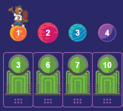
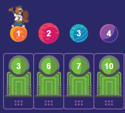

Teleportit
Majava haluaa matkustaa renkaan ympäröimälle planeetalle.
Kun klikkaat "Matkusta", majava siirtyy allaan olevaan teleporttiin merkityn numeron mukaiselle planeetalle täsmälleen 4711 kertaa peräkkäin.
Vaihda raahaamalla yksi teleportti sellaiseen paikkaankaksi teleporttia sellaisiin paikkoihin, että majava päätyy lopuksi renkaan ympäröimälle planeetalle.

 
